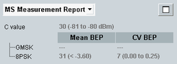
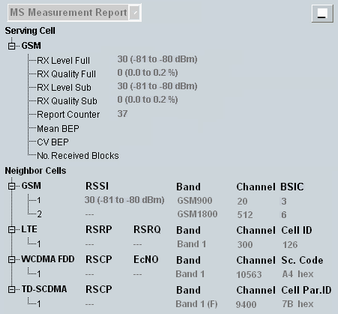

To display the measurement report information, select "MS Measurement Report" in the field below the event log area. Press the button to the right to maximize the measurement report area.
The displayed information is provided by the connected MS in its periodic measurement reports.
GSM mobile phones continuously measure the signal strength and quality of the serving and neighbor cells. The MS regularly transmits measurement reports to inform the serving cell BTS about its measurement results. The measurements are averaged over reporting periods; for details refer to 3GPP TS 45.008.
The MS reports different parameters in the CS domain and in the PS domain. In the PS domain, the displayed parameters depend on the configured "TBF Level".

The minimized default presentation shows all measurement report values for the serving GSM cell.
To show also neighbor cell measurement results, press the button to the right. This button maximizes the area vertically.
To maximize the area also horizontally, press the button again.

Neighbor cell measurements are by default disabled and can be enabled separately for each neighbor cell, see "Neighbor Cell Settings".
The measurement results displayed in the maximized report area are described below. Also configured neighbor cell settings are displayed (band, channel, ...).
The MS measurement report for the serving cell depends on the active connection. The MS measurements for CS and PS connections are described below.
RX level denotes the received signal power. The reported "RX Level Full" result is measured over the full set of TDMA frames. The "RX Level Sub" result is obtained in a subset of four SACCH frames and the special frame types employed during discontinuous transmission (DTX).
The levels are expressed in terms of dimensionless power levels depending linearly on the absolute measured power. A high-power level implies a high received signal input power, see following table.
RX level | Received signal power in dBm |
|---|---|
63 62 61 ... 2 1 0 | > -48 dBm -49 dBm to -48 dBm -50 dBm to -49 dBm ... -109 dBm to -108 dBm -110 dBm to -109 dBm < -110 dBm |
RQ quality denotes the received signal quality. The reported "RX Quality Full" is measured over the full set of TDMA frames. The "RX Quality Sub" result is obtained in a subset of four SACCH frames and the special frame types employed during discontinuous transmission (DTX).
The received signal quality is expressed in terms of dimensionless quality levels (actually error levels). A high-quality level implies a high bit error rate and thus a poor received signal quality, see following table.
RX quality | Bit error rate |
|---|---|
0 1 2 3 4 5 6 7 | 0 % to 0.2 % 0.2 % to 0.4 % 0.4 % to 0.8 % 0.8 % to 1.6 % 1.6 % to 3.2 % 3.2 % to 6.4 % 6.4 % to 12.8 % 12.8 % to 100 % |
Number of measurement reports received since the connection was established. According to GSM specifications, a report is transmitted every 4 multiframes.
Remote command:When the enhanced measurement report is activated (see "Enhanced Measurement Report"), the following MS measurements are provided.
Denotes the average bit error probability (BEP) of the radio blocks, averaged over all blocks within the MS reporting period. Modulation-independent mean BEP value is calculated for circuit switched connections. For details, refer to Table "Range of parameter mean BEP".
Remote command:Denotes the coefficient of variation of the bit error probability (CV BEP) of the radio blocks, averaged over all blocks within the MS reporting period. The coefficient of variation is the standard deviation of the measured BEP of the different bursts within the block. It vanishes if all bursts have equal BEP.
In 3GPP TS 45.008, the parameter is called CV_BEP. It is expressed in terms of dimensionless values, see following table.
CV BEP | Value range |
|---|---|
0 1 2 3 4 5 6 7 | 1.75 to 2.00 1.50 to 1.75 1.25 to 1.50 1.00 to 1.25 0.75 to 1.00 0.50 to 0.75 0.25 to 0.50 0 to 0.25 |
Indicates the number of blocks that theR&S CMW received in the UL since the beginning of the measurement.
Remote command:RQ quality denotes the received signal quality. It is expressed in terms of dimensionless quality levels (actually error levels). The same table as for the CS domain applies, see "RX Quality Full / Sub (CS)".
Remote command:The C value is the normalized received signal level at the MS, averaged over the radio blocks. The level is expressed in terms of dimensionless numbers ranging from 0 to 63. The assignment between C values and absolute received signal levels is equal to the assignment for RX levels, see "RX Level Full / Sub (CS)".
The C value is used for GPRS uplink power control, see "GPRS Uplink Power Control".
Remote command:Denotes the variance of the received signal level within the radio blocks, averaged over all blocks within the MS reporting period. The variance is a measure of the difference between the received signal levels of the different bursts within the block. It vanishes if all burst levels are equal.
In 3GPP TS 45.008, the parameter is called SIGN_VAR. It is expressed in terms of dimensionless values, see following table.
Sign. Var. | Value range |
|---|---|
63 62 61 ... 2 1 0 | > 15.75 dB2 > 15.50 dB2 to 15.75 dB2 > 15.25 dB2 to 15.50 dB2 ... > 0.50 dB2 to 0.75 dB2 > 0.25 dB2 to 0.50 dB2 0 dB2 to 0.25 dB2 |
Denotes the average bit error probability (BEP) of the radio blocks, averaged over all blocks within the MS reporting period. Independent MEAN_BEP parameters are available for the different modulation schemes, see Table "Range of parameter mean BEP".
Remote command:Denotes the coefficient of variation of the bit error probability (CV BEP) of the radio blocks, averaged over all blocks within the MS reporting period.
Individual CV BEP parameters are available for the different modulation schemes.
See also: "CV BEP".
Remote command:Option R&S CMW-KS210 is required.
For the measured neighbor cells, the following values are displayed for the supported RATs:
For the measured GSM neighbor cell specified by band, channel and BSIC, the following value is displayed:
The received signal strength indicator (RSSI) denotes the received wideband power within the GSM channel bandwidth, measured on a GSM BCCH carrier.
The measurement report displays the reported dimensionless value and in brackets the corresponding measured value range.
Remote command:For the measured LTE neighbor cell specified by band and channel, the following values are displayed:
- The reference signal received power (RSRP) denotes the average power of the resource elements carrying cell-specific reference signals.
- The reference signal received quality (RSRQ) is calculated as RSRQ = N×RSRP / (E-UTRA carrier RSSI). The "E-UTRA carrier RSSI" denotes the average of the total received power (including interferers etc.) observed in OFDM symbols. It contains also reference symbols for antenna port 0 within the measurement bandwidth (N resource blocks).
The measurement report displays the reported dimensionless values and in brackets the corresponding measured value range.
Remote command:For the measured WCDMA neighbor cell specified by band, channel and scrambling code, the following values are displayed:
- The received signal code power (RSCP) denotes the received power on one code, measured on the primary CPICH of the neighbor WCDMA cell.
- The Ec/No denotes the ratio of the received energy per PN chip for the primary CPICH to the total received power spectral density in the WCDMA band.
The measurement report displays the reported dimensionless values and in brackets the corresponding measured value range.
Remote command:For the measured TD-SCDMA neighbor cell specified by band, channel and scrambling code, the following value is displayed:
The received signal code power (RSCP) denotes the received power, measured on the P-CCPCH of the neighbor TD-SCDMA cell.
The measurement report displays the reported dimensionless values and in brackets the corresponding measured value range.
Remote command: